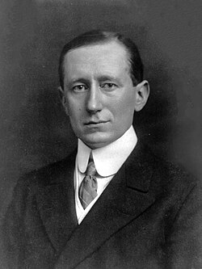

Guglielmo Marconi
Radio pioneer, 1874 to 1937

The Italian inventor who shared the 1909 Nobel Prize in Physics for wireless telegraphy. In 1920 he said his stations had picked up unexplained signals that might come from another planet, and he is said to have listened for Mars from his yacht Elettra in the early 1920s. 1
UNVERIFIED: he never claimed actual contact, and the signals were most likely natural or earthly interference.
Open in the interactive Watcher
Related
- Marconi's mystery signals His 1920 claim
- Listening for Mars The 1924 listen for Mars
Sources
- Guglielmo Marconi Wikipedia